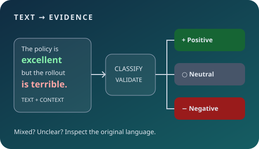

Technical week 07 · Version 1 · 90 minutes
Sentiment analysis
From counting words to evaluating language: classify, validate and interpret digital discourse.
Digital Humanities · Proposed teaching date: 9 December 2026

Browser laboratories use deterministic JavaScript teaching models, not Python, VADER or live AI. All data and lexicons are synthetic. No API key, external library or commercial service is needed. A dedicated Week 07 notebook is deferred; copy Python examples into Colab or review the existing 2025 LLM notebook (verify API and model availability before running).
Download annotated corpus · English lexicon · Latvian lexicon · Provenance
Learning objectives
- Distinguish polarity, stance, subjectivity, emotion, target and intensity.
- Implement a dictionary-based classifier; recognize missing evidence and mixed sentiment.
- Explain contextual rules, language and domain limitations.
- Compare lexicons, trained classifiers and LLMs.
- Calculate accuracy, precision, recall and F1 and inspect errors.
- Analyze a corpus and document evidence and limitations.
Review Week 03 tokenization, Week 04 JSON, Week 05 acquisition and Week 06 corpus analysis.
Section 1 · 8 min
What is sentiment?
Sentiment analysis identifies evaluative language computationally. Polarity concerns positive or negative evaluation; subjectivity concerns opinion versus factual presentation; emotion distinguishes states such as joy and anger; stance concerns support or opposition to a target; intensity concerns strength; framing concerns how an issue is presented. These are related but not interchangeable.
“The government introduced an excellent policy, although its previous decisions were disastrous.” Two targets are evaluated differently. A document-level label hides this structure. Decide whose evaluation, towards what target, and at which unit (sentence, comment, article, aspect).
1. Human annotation
Choose an interpretation before revealing the reference; these are teaching judgments, not independently adjudicated truth.
Interactive results require JavaScript.
Section 2 · 12 min
Lexicons and scores
A lexicon maps tokens to weights. The simplest score is the sum of matched weights: S = Σ w(token). Unknown tokens contribute zero. A zero score can mean balanced evidence, weak evidence or no matches at all. The browser distinguishes those cases; it does not pretend that every unknown word is neutral.
Our tokenizer uses Unicode NFC normalization, lowercase, and maximal runs of letters, combining marks and numbers (as in Week 06). It splits punctuation, apostrophes and hyphens; it is not a linguistic tokenizer. Exact forms are not lemmas.
2. Lexicon scoring playground
Interactive results require JavaScript.
import unicodedata
def tokenize(text):
tokens, current = [], []
for char in unicodedata.normalize("NFC", text).lower():
if unicodedata.category(char)[0] in "LMN":
current.append(char)
elif current:
tokens.append("".join(current))
current = []
if current:
tokens.append("".join(current))
return tokens
assert tokenize("Rīga un Rīga!") == ["rīga", "un", "rīga"]Section 3 · 15 min
Implementing a classifier
Build a dictionary classifier with the Python concepts from Weeks 01–03. Raw score depends on length. Per-token score divides by all tokens, per-match score by matched tokens, and coverage is the fraction matched. A zero denominator is undefined, not zero. The classifier uses a symmetric neutral band |score| ≤ threshold; inside that band opposing positive and negative evidence is mixed, otherwise neutral. No matches always return unclear. Outside the band the net sign wins, even when both directions are present. This is a declared operational definition, not universal sentiment theory.
def score_text(text, lexicon, threshold=0):
if threshold < 0:
raise ValueError("Threshold must be nonnegative")
tokens = tokenize(text)
weights = [lexicon[t] for t in tokens if t in lexicon]
positive = sum(w for w in weights if w > 0)
negative = sum(w for w in weights if w < 0)
net = positive + negative
if not weights:
label = "unclear"
elif abs(net) <= threshold:
label = "mixed" if positive > 0 and negative < 0 else "neutral"
else:
label = "positive" if net > 0 else "negative"
return dict(net=net, label=label,
coverage=len(weights)/len(tokens) if tokens else None,
per_token=net/len(tokens) if tokens else None,
per_match=net/len(weights) if weights else None)
lexicon = {"good": 2, "bad": -2, "excellent": 3}
print(score_text("good but bad", lexicon))
assert score_text("good bad", lexicon)["label"] == "mixed"
assert score_text("the report", lexicon)["label"] == "unclear"3. Build a classifier
Edit one exact token per line using word = weight (−10 to +10, unique words). The selected text language and this custom lexicon are independent of later corpus analysis.
Interactive results require JavaScript.
Section 4 · 12 min
Negation and context
Negation (“not good”), intensification (“very good”), attenuation (“somewhat good”), contrast, irony (“Great, another delay”), attribution, implicit evaluation and domain specificity (“positive test result”) challenge a bag-of-words model. Stop-word removal may discard negators. Target-specific sentiment requires identifying what is evaluated, not merely counting polar words.
Our heuristic rules: odd number of recognized negators among the previous three tokens flips a weight; an immediately preceding modifier multiplies it (very/ļoti ×1.5, extremely/ārkārtīgi ×2, somewhat/nedaudz ×0.5); a contrast marker weights later tokens in the same punctuation-delimited chunk by 1.5; a chunk ending in an exclamation gets ×1.25. Clause punctuation resets context. These simplified rules can fail on “not only good”, sarcasm, scope, quotation and Latvian morphology. Multiple rules multiply.
4. Context-aware scoring
Interactive results require JavaScript.
# Small independent demonstration: only negation, not all browser rules.
import re
def negation_score(text, lexicon, negators=("not", "never", "no")):
total = 0
for clause in re.split(r"[.!?;:,]", text):
recent = []
for word in tokenize(clause):
if word in ("but", "although", "however"):
recent = []
continue
weight = lexicon.get(word, 0)
if sum(t in negators for t in recent[-3:]) % 2:
weight = -weight
total += weight
recent.append(word)
return total
assert negation_score("not good", lexicon) == -2
assert negation_score("not. good", lexicon) == 2Section 5 · 12 min
From rules to models
| Method | Strength | Limitation |
|---|---|---|
| Lexicon | Transparent, reproducible | Little context or coverage |
| Rule-based (e.g. VADER) | Handles selected modifiers | Language/domain restrictions |
| Traditional supervised ML | Learns patterns from labeled examples | Needs representative annotation |
| Transformer classifier | Contextual representations | Training bias and model-specific constraints |
| LLM instruction-based annotation | Flexible target and schema | Cost, variation, validation and privacy |
NLTK/VADER and TextBlob are introductory English tools; scikit-learn supports trained classifiers, and Hugging Face Transformers supports pretrained contextual models. A model's label space and training domain must be inspected. None guarantees a valid Latvian result. VADER returns positive, neutral and negative proportions from its rule-based scoring and a normalized compound score (−1 to +1); these are not calibrated document-class probabilities. VADER is not the algorithm used in our browser.
Optional real Python: NLTK / VADER
Requires NLTK installation and a lexicon download (network). Not part of offline regression tests. Run in Colab or local Python.
# Optional: in a Colab cell, install nltk if needed: %pip install nltk
import nltk
from nltk.sentiment import SentimentIntensityAnalyzer
nltk.download("vader_lexicon")
analyzer = SentimentIntensityAnalyzer()
print(analyzer.polarity_scores("The exhibition was excellent!"))
print(analyzer.polarity_scores("The exhibition was not excellent."))Documentation: NLTK · TextBlob · scikit-learn · Transformers.
Section 6 · 15 min
Evaluation and error analysis
Human reference labels require an annotation protocol, a unit of analysis and ideally independent annotators. A confusion matrix counts reference versus predicted labels. True positives (TP), false positives (FP) and false negatives (FN) are calculated one class at a time. Accuracy = correct/all; precision = TP/(TP+FP); recall = TP/(TP+FN); F1 = 2PR/(P+R). Macro F1 averages the four reference classes equally. Undefined per-class metrics are set to zero in this teaching convention; an empty overall sample has undefined accuracy and macro F1. Unclear is an abstention column; it counts as an error against a reference label and is never silently removed. Neutral and mixed remain distinct.
5. Editable confusion matrix
Rows: reference. Columns: prediction (including unclear). Change any nonnegative integer count. Reset to restore the example.
Interactive results require JavaScript.
def evaluate(matrix):
# Rows: positive, neutral, negative, mixed.
# Columns: the same four labels, plus unclear.
total = sum(map(sum, matrix))
correct = sum(matrix[i][i] for i in range(4))
scores = []
for i in range(4):
tp = matrix[i][i]
predicted = sum(row[i] for row in matrix)
actual = sum(matrix[i])
p = tp / predicted if predicted else 0
r = tp / actual if actual else 0
scores.append(2*p*r/(p+r) if p+r else 0)
return {"accuracy": correct/total if total else None,
"macro_f1": sum(scores)/4 if total else None}
example = [[1,0,0,0,0], [0,0,0,0,1],
[1,0,0,0,0], [0,0,0,1,0]]
assert evaluate(example)["accuracy"] == 0.5Class imbalance can hide errors. An evaluation set should not be used to tune the model and then reported as independent test performance. Report support, abstentions, annotation disagreements and domain shift.
Section 7 · 10 min
Comparing corpora
The separate teaching corpus contains 48 synthetic documents: 24 English and 24 Latvian, six per reference class in each language, three per class per fictional publication. It shares the Week 06 metadata structure, but examples and reference labels were constructed for this lesson. Filter one language at a time. These are not empirical media observations or independent gold-standard annotations.
6. Corpus sentiment dashboard
Loading local fixtures…
Interactive results require JavaScript.
Optional Python: read the local corpus
# Optional: download the two JSON files using the links above,
# upload to Colab, then run after the baseline function.
import json
from collections import Counter
with open("sample_sentiment_corpus.json", encoding="utf-8") as f:
corpus = json.load(f)
with open("lexicon_en.json", encoding="utf-8") as f:
english = json.load(f)["weights"]
subset = [r for r in corpus["records"] if r["language"] == "en"]
counts = Counter(score_text(r["text"], english)["label"] for r in subset)
print(counts)Section 8 · 6 min
Research interpretation and self-check
Research question: How does evaluative language about environmental policy differ between fictional business-oriented and environmental publications?
- Specify target, speaker and unit of annotation.
- Select language, source, genre and period; record the sample size.
- Compare baseline and context rules; report coverage and reference distribution.
- Inspect at least three disagreements and original texts, using Week 06 concordance reasoning.
- Report accuracy, macro F1 and abstentions. Explain how selection, genre, morphology or classifier bias might produce differences.
- Export the configuration and results, record the method version and formulate cautious conclusions.
Because the corpus is synthetic and balanced, its labels cannot establish real publication sentiment. For Week 08, construct a corpus justified by your research question, independently annotate a sample, document permissions and preserve source provenance.
Continue to the self-assessment or explore the optional extensions below.
Multilingual sentiment analysis
Optional laboratory: English and Latvian (15–20 min)
Latvian inflection (labs, laba, labi, labas), derivation (prieks, priecīgs), negation (nav labs, nelabs) and missing diacritics (ļoti vs loti) complicate exact matching. Translation changes wording and intensity and is not an automatic validation strategy. These small lexicons are instructional, not validated language resources.
7. Multilingual comparison
Interactive results require JavaScript.
LLM-assisted annotation
Optional laboratory: prompts and structured output (20–30 min)
Read the existing OpenAI notebook with its 2025 examples, multilingual prompts and nondeterminism discussion. The following is a deterministic teaching simulation: no model is queried. Actual outputs may differ; verify API usage and model identifiers before live execution. A prompt should specify unit, target, attribution, label definitions, mixed and unclear cases, and output schema. Evidence quotations should be verified against input.
8. Prompt design simulator
Interactive results require JavaScript.
Record the exact model/version, prompt, parameters, truncation policy, date, schema validation, cost and sampling procedure. Do not send sensitive or restricted text without authorization. Validate against human annotations; never treat self-reported uncertainty as calibrated probability. Structured JSON connects back to Week 04.
Self-assessment and practice
These 12 questions provide formative feedback, not Moodle assessment.
Six practical exercises
- Annotate the five sentences; explain two ambiguous targets.
- Add five words and weights to the lexicon; record your rationale.
- Implement the baseline scoring function and test empty and mixed inputs.
- Enable negation and identify a counterexample where the window fails.
- Build a confusion matrix from ten independently annotated examples; compute metrics and abstentions.
- Compare two subcorpora, export results and write a cautious interpretation with two limitations.
Personal study checklist
Local browser progress only; not an assessment record.
0 / 6 items marked
Glossary
- Polarity
- Direction of evaluation.
- Subjectivity
- Expression of opinion or personal judgment.
- Stance
- Position toward a specified proposition or target.
- Lexicon / valence
- Mapping of lexical forms to evaluative weights.
- Classifier
- Procedure assigning discrete labels.
- Negation / intensifier
- Expression reversing or modifying evaluative strength.
- Confusion matrix
- Counts of reference labels against predictions.
- Precision / recall / F1
- Correctness of class predictions, recovery of reference items and their harmonic mean.
- Annotation
- Assignment of labels under documented guidelines.
- Reference label (ground truth)
- Evaluation target; human judgments may disagree.
- Domain shift
- Difference between training or development data and target data.
- Inter-annotator agreement
- Extent to which independent annotators agree under a protocol.
- Abstention
- A classifier withholding a definite label.
- Coverage
- Proportion of tokens recognized by a lexicon.